01System design·System Design Interview · news feed, fan-out on write
News feed fan-out
One post becomes N feed entries at write time, so every friend's read is a cache hit.

Looping animated SVG explainers. One file, one <style>, no script. Packets travel along orthogonal connectors, rings mark arrivals, captions name the acts. Hide the motion and the frame still reads. Drop the file into an <img>, a README, a Substack post.
One post becomes N feed entries at write time, so every friend's read is a cache hit.

Over the limit, the middleware answers 429 itself; the API servers only ever see the allowed share.

The prompt crosses the gateway once; everything after it stays on private endpoints inside the VNet.
